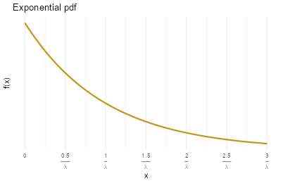
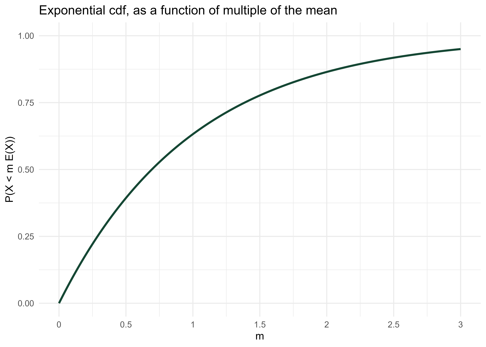

| Percentile | Relative to mean |
|---|---|
| 10% | 0.11 times the mean |
| 25% | 0.29 times the mean |
| 39.3% | 0.50 times the mean |
| 50% | 0.69 times the mean |
| 63.2% | 1.00 times the mean |
| 75% | 1.39 times the mean |
| 77.7% | 1.50 times the mean |
| 86.5% | 2.00 times the mean |
| 90% | 2.30 times the mean |
| 91.8% | 2.50 times the mean |
| 95% | 3.00 times the mean |
| 97% | 3.50 times the mean |
| 98.2% | 4.00 times the mean |
| 98.9% | 4.50 times the mean |
| 99.3% | 5.00 times the mean |
15 Exponential Distributions
- Exponential distributions are often used to model the waiting times between events in a random process that occur continuously over time.
Example 15.1 A business is tracking when online orders are placed on their website. Suppose an order just occurred and let \(X\) be the time until the next order is placed, measured in hours, including fractions of an hour. Assume that \(X\) has an Exponential distribution with rate parameter 2.5 per hour, with pdf \[ f_X(x) = 2.5 e^{-2.5x}, \qquad x >0 \]
- Sketch the pdf of \(X\). Roughly, what does this tell you about times between orders?
- Compute and interpret \(\text{P}(X < 0.5)\).
- Determine the cdf of \(X\).
- Determine what percentile 2 hours is.
- Compute and interpret the median of \(X\).
- Make an educated guess for \(\text{E}(X)\). Then compute and interpret \(\text{E}(X)\); did your guess work?
- Compute and interpret \(\text{P}(X < \text{E}(X))\).
- A continuous random variable \(X\) has an Exponential distribution with rate parameter \(\lambda>0\) if its pdf is \[ f_X(x) = \begin{cases}\lambda e^{-\lambda x}, & x > 0,\\ 0, & \text{otherwise} \end{cases} \]
- If \(X\) has an Exponential(\(\lambda\)) distribution then \[\begin{align*} \text{cdf:} \quad F_X(x) & = 1-e^{-\lambda x}, \quad x> 0\\ \text{P}(X>x) & = e^{-\lambda x}, \quad x> 0\\ \text{quantile:} \quad Q(p) & = -(1/\lambda) \ln(1-p),\quad 0<p<1\\ \text{E}(X) & = \frac{1}{\lambda}\\ \text{Var}(X) & = \frac{1}{\lambda^2}\\ \text{SD}(X) & = \frac{1}{\lambda} \end{align*}\]
- Percentiles for any Exponential distribution follow a particular pattern in terms of “multiples of the mean”:
- For any \(m>0\), \(\text{P}(X \le m\text{E}(X)) = 1-e^{-m}\).
- For example, for any Exponential distribution the mean (\(m=1\)) is the 63.2rd percentile (\(1-e^{-1}=0.632\)).
- The \(p\)th percentile is \(-\ln(1-p)\) times \(\text{E}(X)\).
- For example, for any Exponential distribution the median (\(p=0.5\)) is 0.693 times the mean (\(-\ln(1-0.5) = 0.693\)).
- For example, for any Exponential distribution the median (\(p=0.5\)) is 0.693 times the mean (\(-\ln(1-0.5) = 0.693\)).
- See Table 15.1.
- For any \(m>0\), \(\text{P}(X \le m\text{E}(X)) = 1-e^{-m}\).
- Exponential distributions are often used to model the waiting time in a random process until some event occurs.
- \(\lambda\) is the average rate at which events occur over time (e.g., 2 per hour)
- \(1/\lambda\) is the mean time between events (e.g., 1/2 hour)
- If \(X\) has an Exponential(\(\lambda)\) distribution and \(a>0\) is a constant, then \(aX\) has an Exponential(\(\lambda/a\)) distribution.
- If \(X\) is measured in hours with rate \(\lambda = 2\) per hour and mean 1/2 hour
- Then \(60X\) is measured in minutes with rate \(2/60\) per minute and mean \(60(1/2)=30\) minutes.
- If \(X\) has an Exponential(1) distribution and \(\lambda>0\) is a constant then \(X/\lambda\) has an Exponential(\(\lambda\)) distribution.
- If \(U\) has a Uniform(0, 1) distribution then \(-\ln(1-U)\) has Exponential(1) distribution, and \(-(1/\lambda) \ln(1-U)\) has an Exponential(\(\lambda\)) distribution.


Example 15.2 Continuing Example 15.1. Let \(N(1)\) be the number of orders in a 1 hour period, a discrete random variable. Then the expected value of \(N(1)\) is 2.5 orders. If \(N(2)\) is the number of orders that happen in a 2 hour period then its expected value is \(\text{E}(N(2)) =5\) orders. In general, if \(N(t)\) is the number of orders in a \(t\) hour period its expected value is \(\text{E}(N(t)) =2.5t\) orders.
Assume that, for any \(t\), the discrete random variable \(N(t)\) has a Poisson distribution with parameter \(2.5t\). Now we’ll consider what this assumption implies about the time between orders. Suppose an order just occurred and let \(T\) be the time in hours until the next order; \(T\) is a continuous random variable.
- Interpret the event \(\{T>0.5\}\). How can you express this as an equivalent event involving a number of order?
- Compute and interpret \(\text{P}(T > 0.5)\).
- Compute \(\text{P}(T > t)\) as a function of \(t>0\).
- Identify by name the distribution of \(T\); be sure to specify the values of any relevant parameters.
- Compute and interpret \(\text{E}(T)\).
- Events occur continuously over time according to a Poisson process with rate \(\lambda>0\) (per unit time) if
- The number of events that occur in any time interval of length \(t\) has a Poisson\((\lambda t)\) distribution.
- In particular, the distribution does not depend on the starting time or ending time of the interval, just its length.
- The numbers of events that occur in disjoint intervals of time are independent.
- The number of events that occur in any time interval of length \(t\) has a Poisson\((\lambda t)\) distribution.
- A random process is a Poisson process with rate \(\lambda\) if and only if
- it is a counting process, that is, it is a process which counts the number of occurrences of some event over time.
- the interarrival times (times between events) \(W_0, W_1,\ldots\) are independent Exponential\((\lambda)\) random variables
15.1 Exercises
Exercise 15.1 Use the “multiples of the mean rule” to create a circular spinner for simulating values from a generic Exponential distribution.
- Version 1: label the circular axis in increments of 0.5, 1.0, 1.5, 2.0, 2.5, etc., multiple of the mean. Careful: the values should not be evenly spaced.
- Sketch a histogram with equal bin widths—0 to 0.5, 0.5 to 1.0, 1.0 to 1.5, etc.—that you would expect to see after spinning the version 1 spinner many times. Does it have an Exponential shape?
- Version 2: label the circular axis so that your spinner has 10 sectors each with probability 0.1.
- Sketch a histogram that you would expect to see after spinning the version 2 spinner many times. Start by sketching a histogram with unequal bin widths, then sketch the correspond equal bin width histogram. Does it have an Exponential shape?
- Explain how could you use this spinner (either version) to simulate values from an Exponential distribution with rate parameter 2.5 (like in Example 15.1).
Exercise 15.2 Continuing Example 15.1. Let \(X\) be the waiting time (hours) until the next order and assume \(X\) has an Exponential(2.5) distribution.
- Find the conditional probability that the waiting time from now until the next order is greater than 3 hours given that no orders occur in the next hour. Be sure to write a valid probability statement involving \(X\) before computing.
- Compare to \(\text{P}(X > 2)\). What do you notice?
- Memoryless property. If \(W\) has an Exponential(\(\lambda\)) distribution then for any \(w,h>0\) \[ \text{P}(W>w+h\,\vert\, W>w) = \text{P}(W>h) \]
- Given that we have already waited \(w\) units of time, the conditional probability that we wait at least an additional \(h\) units of time is the same as the unconditional probability that we wait at least \(h\) units of time.
- In this sense, the future waiting time does not “remember” how long we have already waited.
- A continuous random variable \(W\) has the memoryless property if and only if \(W\) has an Exponential distribution. That is, Exponential distributions are the only continuous1 distributions with the memoryless property.
- If \(W\) has an Exponential(\(\lambda\)) distribution then the conditional distribution of the excess waiting time, \(W - w\), given \(\{W>w\}\) is Exponential(\(\lambda\)).
Geometric distributions are the only discrete distributions with the discrete analog of the memoryless property.↩︎